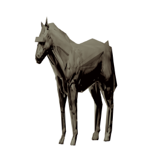

Takuma Kajikawa
梶川 琢馬
ソフトウェアエンジニア / Tokyo, Japan
VP of Technology @ TechBowl ・ TechTrain メンター
About
TechBowl で TechTrain （エンジニアの学びとキャリアを支えるプラットフォーム）の開発をリードしています。 副業でメンターとしてもエンジニアの相談に乗っています。

梶川 琢馬
ソフトウェアエンジニア / Tokyo, Japan
VP of Technology @ TechBowl ・ TechTrain メンター
TechBowl で TechTrain （エンジニアの学びとキャリアを支えるプラットフォーム）の開発をリードしています。 副業でメンターとしてもエンジニアの相談に乗っています。